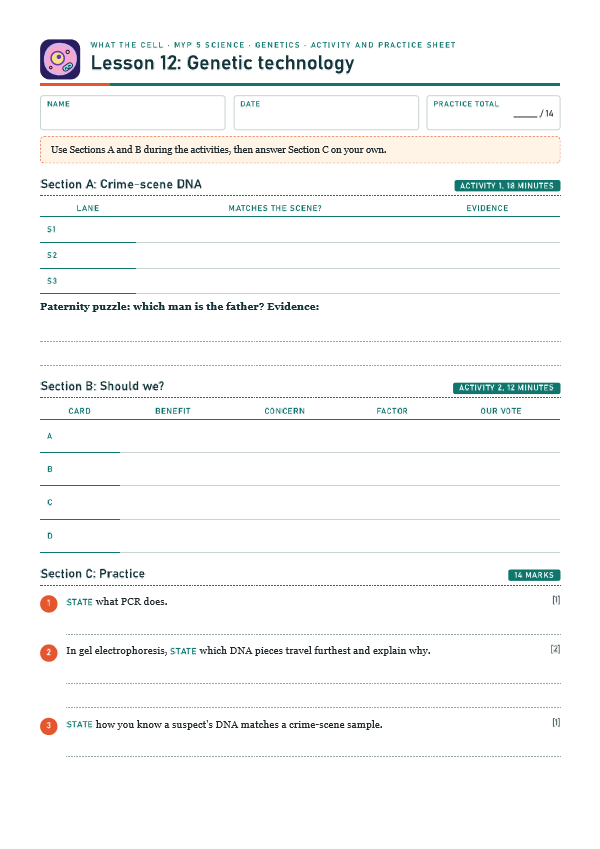

By the end of the lesson you can
- Describe how a DNA profile is made and used
- Outline genetic engineering, with examples
- Describe gene therapy and gene editing
- Discuss benefits and concerns of genetic technology
Keys: arrows or a presentation clicker move the slides, F for full screen. Slides with a red dot have a video or simulation.
Videos (all 5 minutes or less)
- 4:09
DNA Fingerprinting
FuseSchool. While you watch: Which parts of the DNA are used in a profile? Slide 9.
Simulations
- Lab
- Lab
Print and practise

Activity and practice sheet
Used in the lesson’s activities, with practice questions. Your teacher has the answers.
Download (PDF)Lesson 12 slides
All 19 slides in one file, to read again or print. The video buttons on the slides open YouTube.
Download the slides (PDF)Revising? The Revision tab on the unit page has the unit notes and review.
Notes: Genetic technology
GM organism
A genetically modified organism: one whose DNA has been changed by genetic engineering. For example: insect-resistant cotton; insulin-making bacteria.
gene editing
Changing the base sequence of DNA at an exact place. For example: trials to treat sickle cell anaemia.
ethics
Ideas about right and wrong that guide what people should do. For example: should embryos be edited?.
Key words
| DNA profile | a band pattern almost unique to each person |
|---|---|
| gel electrophoresis | separating DNA pieces by size |
| PCR | making millions of copies of DNA |
| genetic engineering | moving a gene into another organism |
| GM organism | an organism with genetically modified DNA |
| gene therapy | adding a working gene to treat a condition |
| CRISPR | a tool that cuts DNA at a chosen place |